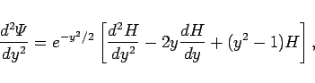
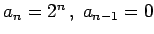

Inhalt Index DeskTop Bronstein

 Differentialgleichungen Partielle Differentialgleichungen Partielle Differentialgleichungen aus Naturwissenschaft und Technik Schrödinger-Gleichung
Differentialgleichungen Partielle Differentialgleichungen Partielle Differentialgleichungen aus Naturwissenschaft und Technik Schrödinger-Gleichung


Harmonische Schwingungen entstehen, wenn die rücktreibende Kraft im Oszillator dem HOOKEschen Gesetz F = -kx genügt. Für Schwingungsfrequenz, Schwingungskreisfrequenz und potentielle Energie ergeben sich:
| (9.123a) |
| (9.123b) |
Durch Einsetzen in (9.112a) erhält die SCHRÖDINGER-Gleichung die Form:
Mit Hilfe der Substitutionen
| (9.124b) |
wobei  ein Parameter und nicht die Wellenlänge ist, kann (9.124a) in die einfachere Form der WEBERschen Differentialgleichung
ein Parameter und nicht die Wellenlänge ist, kann (9.124a) in die einfachere Form der WEBERschen Differentialgleichung
überführt werden.
Für die WEBERsche Differentialgleichung erhält man mit Hilfe des Ansatzes
eine Lösung. Differentiation führt auf
|  | (9.125b) |
Einsetzen in die SCHRÖDINGER-Gleichung (9.124d) liefert
Eine Lösung wird über den Reihenansatz
bestimmt: Einsetzen von (9.126a) in (9.125c) ergibt
| (9.126b) |
Durch Vergleich der Koeffizienten von yj erhält man die Rekursionsformel
Die Koeffizienten aj für gerade Potenzen von y werden auf a0 zurückgeführt, die Koeffizienten für ungerade Potenzen auf a1. Damit sind a0 und a1 frei wählbar.
Gesucht ist die Aufenthaltswahrscheinlichkeit des betrachteten Teilchens in den verschiedenen Zuständen. Diese wird mit Hilfe einer physikalisch sinnvollen, d.h. normierbaren, für große Werte von y gegen Null gehenden Eigenfunktion und quadratisch integrierbaren Wellenfunktion beschrieben.
Die Exponentialfunktion im Ansatz (9.125a) sorgt dafür, daß die Lösung für  gegen Null strebt, wenn die Funktion H(y) ein Polynom ist. Daher müssen die Koeffizienten aj in (9.126a), beginnend von einem bestimmten n an, für alle j > n verschwinden: . Mit j = n lautet die Rekursionsformel (9.126c) jetzt
gegen Null strebt, wenn die Funktion H(y) ein Polynom ist. Daher müssen die Koeffizienten aj in (9.126a), beginnend von einem bestimmten n an, für alle j > n verschwinden: . Mit j = n lautet die Rekursionsformel (9.126c) jetzt
| (9.127a) |
Für kann sie nur erfüllt werden, wenn
| (9.127b) |
gesetzt wird. Somit verschwinden durch die angegebene Wahl von  die Koeffizienten . Damit auch die Koeffizienten verschwinden, muß an-1 = 0 sein.
die Koeffizienten . Damit auch die Koeffizienten verschwinden, muß an-1 = 0 sein.
Für die spezielle Wahl  erhält man die HERMITEschen Polynome der 2. Definitionsgleichung. Die ersten sechs lauten:
| (9.128a) |
wobei Nn der Normierungsfaktor ist. Man erhält ihn aus der Normierungsbedingung zu
| (9.128b) |
Für die Eigenwerte der Schwingungsenergie ergibt sich als Quantisierungsbedingung aus der Bedingung für den Abbruch der Reihe mit (9.124c)
| (9.128c) |
Das Spektrum der Energiezustände ist äquidistant. Der Summand +1/2 in der Klammer bedeutet, daß der quantenmechanische Oszillator im Unterschied zum klassischen auch im tiefsten energetischen Zustand mit n = 0 Energie besitzt, dieNullpunktsschwingungsenergie.
Die folgende Abbildung zeigt eine graphische Darstellung des äquidistanten Spektrums der Energiezustände, die zugehörigen Wellenfunktionen bis sowie die Funktion der potentiellen Energie (9.123c).
Die Punkte auf der Parabel der potentiellen Energie bezeichnen die Umkehrpunkte des klassischen Oszillators, die als Amplitude aus der Energie berechnet werden. Die quantenmechanische Wahrscheinlichkeit, ein Teilchen im Intervall (x, x + dx) zu finden, ist durch gegeben. Sie ist auch außerhalb dieser Punkte von Null verschieden. So liefert z.B. n=1, also , gemäß , Maxima der Aufenthaltswahrscheinlichkeit bei
| (9.128d) |
Für den entsprechenden klassischen Oszillator ergibt sich
| (9.128e) |
Die quantenmechanische Verteilungsdichte nähert sich für große Werte der Quantenzahl n in ihrem Mittelwert der klassischen.